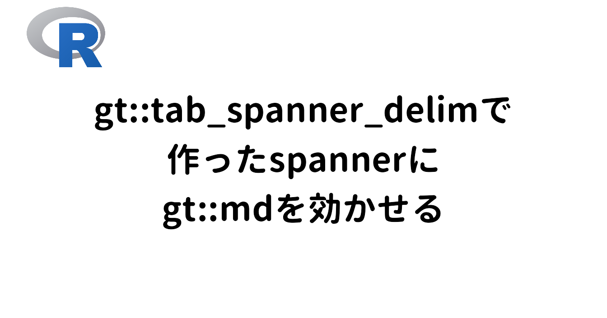
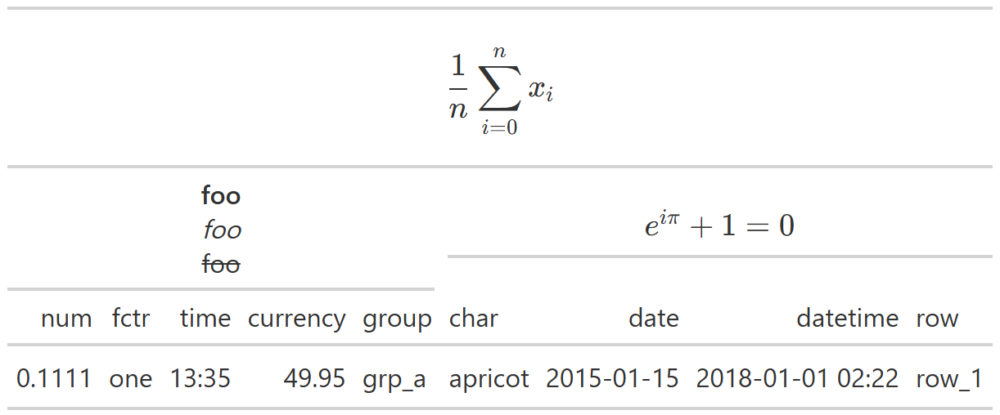

Packages
Contents
Problem
gtパッケージ1でちょっと凝った表を作ろうとしたときにつまずきました。
gt_iris <-
iris |>
pivot_longer(
cols = -Species,
names_to = "variables"
) |>
reframe(
mean = mean(value),
sd = sd(value),
.by = c(Species, variables)
) |>
pivot_wider(
names_from = Species,
names_sep = "_",
names_vary = "slowest",
values_from = c(mean, sd)
) |>
gt() |>
fmt_number(decimals = 2)
gt_iris| variables | mean_setosa | sd_setosa | mean_versicolor | sd_versicolor | mean_virginica | sd_virginica |
|---|---|---|---|---|---|---|
| Sepal.Length | 5.01 | 0.35 | 5.94 | 0.52 | 6.59 | 0.64 |
| Sepal.Width | 3.43 | 0.38 | 2.77 | 0.31 | 2.97 | 0.32 |
| Petal.Length | 1.46 | 0.17 | 4.26 | 0.47 | 5.55 | 0.55 |
| Petal.Width | 0.25 | 0.11 | 1.33 | 0.20 | 2.03 | 0.27 |
こんな感じで表頭に群、表側に変数を並べるスタイルがあると思います。このとき、列名は”指標名_群名”となっているので、gt::tab_spanner_delim()を使って、区切り文字で分割して群をspannerにまとめることができます。
- 1
-
引数
delimに区切り文字を指定する。 - 2
-
引数
reverseはspannerの取得方向を逆転させるかどうか。デフォルトだと区切り文字の前にあるものがspannerとして採用されるけど、今回は区切り文字の後ろにある群名をspannerにしたいので、TRUEにする。
| variables |
setosa
|
versicolor
|
virginica
|
|||
|---|---|---|---|---|---|---|
| mean | sd | mean | sd | mean | sd | |
| Sepal.Length | 5.01 | 0.35 | 5.94 | 0.52 | 6.59 | 0.64 |
| Sepal.Width | 3.43 | 0.38 | 2.77 | 0.31 | 2.97 | 0.32 |
| Petal.Length | 1.46 | 0.17 | 4.26 | 0.47 | 5.55 | 0.55 |
| Petal.Width | 0.25 | 0.11 | 1.33 | 0.20 | 2.03 | 0.27 |
さて、ここでirisデータの各群（種）は50個ずつデータがあるので、それを群名に付け足したいと思います。群の下に(n = 50)とするのがいいでしょうか。ということでgt::text_transform()を使って、表に現在ある文字を直接入れ替えていきます。gtにはgt::md()という入力をマークダウンテキストとして扱ってくれるヘルパ関数があるので、それを中で使います。
| variables |
Setosa<br>(*n* = 50)
|
Versicolor<br>(*n* = 50)
|
Virginica<br>(*n* = 50)
|
|||
|---|---|---|---|---|---|---|
| mean | sd | mean | sd | mean | sd | |
| Sepal.Length | 5.01 | 0.35 | 5.94 | 0.52 | 6.59 | 0.64 |
| Sepal.Width | 3.43 | 0.38 | 2.77 | 0.31 | 2.97 | 0.32 |
| Petal.Length | 1.46 | 0.17 | 4.26 | 0.47 | 5.55 | 0.55 |
| Petal.Width | 0.25 | 0.11 | 1.33 | 0.20 | 2.03 | 0.27 |
はい、なぜかうまくいきません。
後からテキストを変えているのが原因かもしれないので、元dfの列名からいじってみます。
iris |>
pivot_longer(
cols = -Species,
names_to = "variables"
) |>
reframe(
n = n(),
mean = mean(value),
sd = sd(value),
.by = c(Species, variables)
) |>
pivot_wider(
names_from = c(Species, n),
names_glue = "{Species}<br>(*n* = {n})_{.value}",
names_vary = "slowest",
values_from = c(mean, sd)
) |>
print() |> # only for displaying
gt() |>
fmt_number(decimals = 2) |>
tab_spanner_delim(delim = "_") |>
text_transform(
fn = \(x) gt::md(x),
locations = cells_column_spanners()
)# A tibble: 4 × 7
variables `setosa<br>(*n* = 50)_mean` `setosa<br>(*n* = 50)_sd` `versicolor<br>(*n* = 50)_mean`
<chr> <dbl> <dbl> <dbl>
1 Sepal.Length 5.01 0.352 5.94
2 Sepal.Width 3.43 0.379 2.77
3 Petal.Length 1.46 0.174 4.26
4 Petal.Width 0.246 0.105 1.33
# ℹ 3 more variables: `versicolor<br>(*n* = 50)_sd` <dbl>, `virginica<br>(*n* = 50)_mean` <dbl>,
# `virginica<br>(*n* = 50)_sd` <dbl>| variables |
setosa<br>(*n* = 50)
|
versicolor<br>(*n* = 50)
|
virginica<br>(*n* = 50)
|
|||
|---|---|---|---|---|---|---|
| mean | sd | mean | sd | mean | sd | |
| Sepal.Length | 5.01 | 0.35 | 5.94 | 0.52 | 6.59 | 0.64 |
| Sepal.Width | 3.43 | 0.38 | 2.77 | 0.31 | 2.97 | 0.32 |
| Petal.Length | 1.46 | 0.17 | 4.26 | 0.47 | 5.55 | 0.55 |
| Petal.Width | 0.25 | 0.11 | 1.33 | 0.20 | 2.03 | 0.27 |
はい、うまくいきません。というわけで、何か工夫をしないとtext_transform()でspannerのマークダウンフォーマットはできないようです。
Solution
gt::tab_spanner()
解決策の一つ目は、愚直にgt::tab_spanner()で頑張っていく方法です。spannerを作りたい分だけtab_spanner()を繰り返し、引数labels = md("...")でマークダウン書式を書いていきます。なお、この方法だと元の列名が残ってしまうのでgt::cols_label()などで処理する必要があります。
gt_iris |>
tab_spanner(
label = md("Setosa<br>(*n* = 50)"),
columns = ends_with("setosa")
) |>
tab_spanner(
label = md("Versicolor<br>(*n* = 50)"),
columns = ends_with("versicolor")
) |>
tab_spanner(
label = md("Virginica<br>(*n* = 50)"),
columns = ends_with("virginica")
) |>
cols_label(
1 starts_with("mean") ~ "*M*",
starts_with("sd") ~ "*SD*",
2 .fn = md
)- 1
-
cols_label()の中では、LHS ~ RHSか<column names> = <label>の書き方が通ります。今回の場合、平均値の列は”mean”で始まって、標準偏差の列は”sd”で始まっているので、gt::starts_with()を使って処理します。 - 2
-
すべてのラベルに同じ関数（今回の場合は
md()）を作用させたい場合は、引数.fnに関数オブジェクトを渡すといいです。全てのRHSで都度md(...)を書く手間が省けます。
| variables |
Setosa
(n = 50) |
Versicolor
(n = 50) |
Virginica
(n = 50) |
|||
|---|---|---|---|---|---|---|
| M | SD | M | SD | M | SD | |
| Sepal.Length | 5.01 | 0.35 | 5.94 | 0.52 | 6.59 | 0.64 |
| Sepal.Width | 3.43 | 0.38 | 2.77 | 0.31 | 2.97 | 0.32 |
| Petal.Length | 1.46 | 0.17 | 4.26 | 0.47 | 5.55 | 0.55 |
| Petal.Width | 0.25 | 0.11 | 1.33 | 0.20 | 2.03 | 0.27 |
これで望みのものはできました。ただやはり、同じ関数を何回も繰り返すのは面倒です。
lapply(x, FUN = gt::md)
githubのissueに上がっていたやり方です。
- Inconsistent behavior of gt::text_transform() depending on locations? (Github, rstudio/gt)
text_transform()の挙動って引数locationsに何が来るかで違わね？（gt::cells_body()以外うまくいかなくね？）みたいな内容です。そこでissueした方が例として挙げていたコードに、lapply()を使ったものがありました。実際に使っていたのはgt::html()の方で、中で使われている（？）htmltools::HTML()がベクトルをcollapseしちゃうためlapplyが必要と書かれていました。
gt_iris |>
tab_spanner_delim(
delim = "_",
reverse = TRUE
) |>
text_transform(
fn = \(x) {
str_replace_all(
x,
pattern = c(
"setosa" = "Setosa<br>(*n* = 50)",
"versicolor" = "Versicolor<br>(*n* = 50)",
"virginica" = "Virginica<br>(*n* = 50)"
)
) |>
lapply(FUN = gt::md)
},
locations = cells_column_spanners()
)| variables |
Setosa
(n = 50) |
Versicolor
(n = 50) |
Virginica
(n = 50) |
|||
|---|---|---|---|---|---|---|
| mean | sd | mean | sd | mean | sd | |
| Sepal.Length | 5.01 | 0.35 | 5.94 | 0.52 | 6.59 | 0.64 |
| Sepal.Width | 3.43 | 0.38 | 2.77 | 0.31 | 2.97 | 0.32 |
| Petal.Length | 1.46 | 0.17 | 4.26 | 0.47 | 5.55 | 0.55 |
| Petal.Width | 0.25 | 0.11 | 1.33 | 0.20 | 2.03 | 0.27 |
md()でもうまくいきました。md()の戻り値はベクトルなんですが、やはりHTML化するときに何か不具合がある感じでしょうか。また、試してみたところ、同じくlistを返すpurrr::map()ではうまくいきましたが、characterで返ってくるsapply()やpurrr::map_vec()、purrr::map_chr()などは通りませんでした。
なお、こちらのissueではspannerのラベル変更のための新しい関数が提案されていますね。
- New function tab_spanners_label_with and levels-param for cells_column_spanners (Github, rstudio/gt)
パッケージとして関数を用意してもらえたら嬉しいですし、そうでなければHelpに一言あるといいなあと思いました。
Supplyment
やり方がわかったので、ちょっと遊んでみました。gtで作る表はtex記法にも対応しているのですが、環境によってうまく表示されないので、出力は画像にしてあります。
gt::exibble |>
head(1) |>
rename_with(
.fn = \(x) {
paste(c("foo", "buzz"), x, sep = "_")
}
) |>
relocate(starts_with("foo")) |>
gt() |>
tab_spanner_delim(delim = "_") |>
tab_spanner(
label = "bar",
level = 2,
columns = everything()
) |>
text_case_match(
"foo" ~ "**foo** <br> *foo* <br> ~~foo~~",
"buzz" ~ "$e^{i\\pi} + 1 = 0$",
"bar" ~ "$$\\frac{1}{n} \\sum_{i = 0}^n x_i$$",
.locations = cells_column_spanners()
) |>
text_transform(
fn = \(x) map(x, .f = md),
locations = cells_column_spanners()
)
Conclusion
gt::tab_spanner_delim()で作ったspannerにgt::text_transform()を使ってgt::md()を効かせるにはlapply()が必要だったという話でした。豪華なspannerにしたい人は試してみてください。
Session Infomation
Notesessioninfo
R version 4.5.2 (2025-10-31 ucrt)
Platform: x86_64-w64-mingw32/x64
Running under: Windows 11 x64 (build 26100)
Matrix products: default
LAPACK version 3.12.1
locale:
[1] LC_COLLATE=Japanese_Japan.utf8 LC_CTYPE=Japanese_Japan.utf8 LC_MONETARY=Japanese_Japan.utf8
[4] LC_NUMERIC=C LC_TIME=Japanese_Japan.utf8
time zone: Asia/Tokyo
tzcode source: internal
attached base packages:
[1] stats graphics grDevices utils datasets methods base
other attached packages:
[1] gt_1.3.0 lubridate_1.9.5 forcats_1.0.1 stringr_1.6.0 dplyr_1.2.0 purrr_1.2.1
[7] readr_2.1.6 tidyr_1.3.2 tibble_3.3.1 ggplot2_4.0.2 tidyverse_2.0.0
loaded via a namespace (and not attached):
[1] sass_0.4.10 utf8_1.2.6 generics_0.1.4 xml2_1.5.2 stringi_1.8.7
[6] hms_1.1.4 digest_0.6.39 magrittr_2.0.4 evaluate_1.0.5 grid_4.5.2
[11] timechange_0.4.0 RColorBrewer_1.1-3 fastmap_1.2.0 jsonlite_2.0.0 scales_1.4.0
[16] textshaping_1.0.4 cli_3.6.5 rlang_1.1.7 litedown_0.9 commonmark_2.0.0
[21] base64enc_0.1-6 withr_3.0.2 yaml_2.3.12 otel_0.2.0 tools_4.5.2
[26] tzdb_0.5.0 pacman_0.5.1 vctrs_0.7.1 R6_2.6.1 png_0.1-8
[31] lifecycle_1.0.5 fs_1.6.6 htmlwidgets_1.6.4 ragg_1.5.0 pkgconfig_2.0.3
[36] pillar_1.11.1 gtable_0.3.6 glue_1.8.0 systemfonts_1.3.1 xfun_0.56
[41] tidyselect_1.2.1 rstudioapi_0.18.0 knitr_1.51 farver_2.1.2 htmltools_0.5.9
[46] patchwork_1.3.2 rmarkdown_2.30 labeling_0.4.3 compiler_4.5.2 S7_0.2.1
[51] markdown_2.0